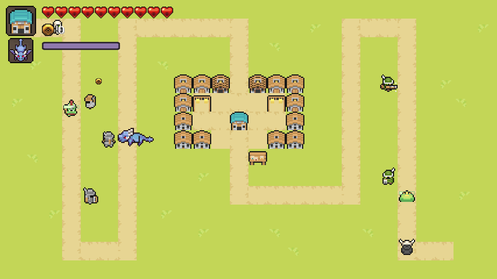

C++ / SDL2 · 游戏客户端实践
村庄保卫战浏览器试玩

布置防线，也亲自加入战斗
守住村庄
建造炮塔抵御敌人，按 Q 停止世界时间。
时间停止时，你仍能移动并攻击。
建议使用电脑，键盘与鼠标操作
WASD移动
J攻击
K能量技能
Q时间停止持续 5 秒 · 冷却 10 秒
建塔在空地按住鼠标，移到塔的选项后松开。
C++ / SDL2 · 游戏客户端实践

布置防线，也亲自加入战斗
建造炮塔抵御敌人，按 Q 停止世界时间。
时间停止时，你仍能移动并攻击。
建议使用电脑，键盘与鼠标操作